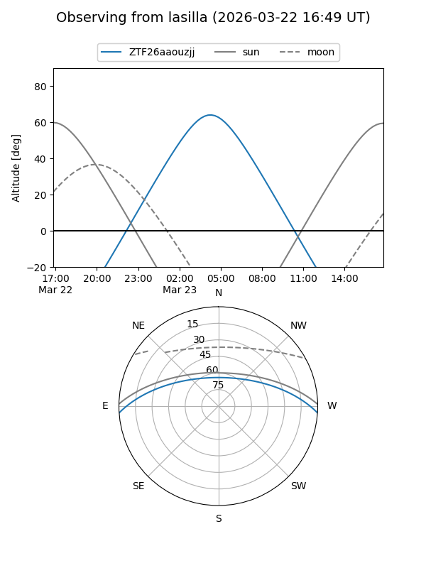
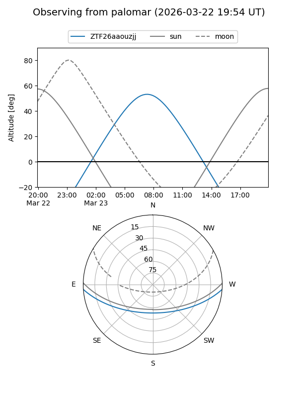

ZTF26aaouzjj
Target ZTF26aaouzjj at 2026-03-23 08:48
Aliases and brokers:
FINK: link
Lasair: link
ALeRCE: link
alt names
ZTF26aaouzjj (ztf,fink_ztf)
Coordinates:
equatorial (ra, dec) = 173.3393,-3.23022
equatorial (HMS+DMS) = 11:33:21.43,-03:13:48.78
galactic (l, b) = (268.0895,+54.27300)
Flags:
Photometry:
last ztfg=17.15
1 ztfg detections
Lightcurve
Visibility


Additional plots